AI & HPC infrastructureFuture Forward
How an LLM Actually Works: Tokens to a 1 GW Campus
What an LLM computes, from tokens to serving, and why it needs the hardware you run, up to a 132 kW rack. Five calculators, every number sourced.
Independent research on how data centers are actually run: reliability, cooling, power, people and the economics around them. Every article is built from published standards, public data and field practice, and every number on this site traces to its source.
Case libraryData-center incidents: 43 governed dossiers with sequence of events, root cause, correction of errors and cited evidence. Root access.Open the library
Every article, newest first. Filter by topic or series, search a title, summary or tag, or sort; the view is in the address bar, so it can be shared.
AI & HPC infrastructureFuture Forward
What an LLM computes, from tokens to serving, and why it needs the hardware you run, up to a 132 kW rack. Five calculators, every number sourced.
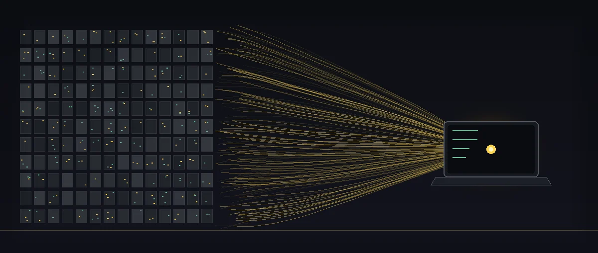
AI & HPC infrastructureFuture Forward
Can 300 TB of training data become 1 KB? The hard physics (Shannon, Kolmogorov, Landauer) and a practical pipeline for task-specific local AI.

Workforce & careersGlobal Analysis
467,000 positions unfilled. 70% of operators struggling. Every strategy the DC industry is using to fight the AI workforce crisis — with a free cost modeler.

Cooling & thermalGlobal Analysis
Two-phase immersion fluid loss, measured: why 17.1%/yr sits above P95, how drains dominate the variance, and what a continuous-loss term implies.

Power & gridGlobal Analysis
PJM faces a 6 GW shortfall by 2027: data centers drive 40% of load growth while 40 GW of thermal plant retires. An engineering analysis.
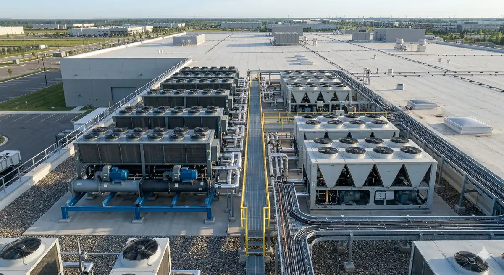
Workforce & careersEngineering Journal
Data center careers for HVAC engineers, electricians, and robotic technicians. Compare salary ranges, training programs, and entry requirements.
AI & HPC infrastructureEngineering Journal
Engineering analysis of xAI Colossus, the fastest supercomputer build in history: 200K GPUs, 150 MW, unpermitted turbines, and what Memphis pays.
AI & HPC infrastructureEngineering Journal
NVIDIA's $4B bet on silicon photonics: an engineering analysis of CPO, ELS, micro ring modulators, and why AI factories need optical interconnects.
Power & gridEngineering Journal
Microsoft, Amazon, Google, Meta and Oracle are betting billions on nuclear SMRs for AI data centers. A DC engineer analyzes the costs and timelines.
Workforce & careersFuture Forward
Inference now dominates AI compute — 2/3 of workloads, $50B+ chip market, 93 GW by 2030. Data-backed analysis with interactive cost calculator.
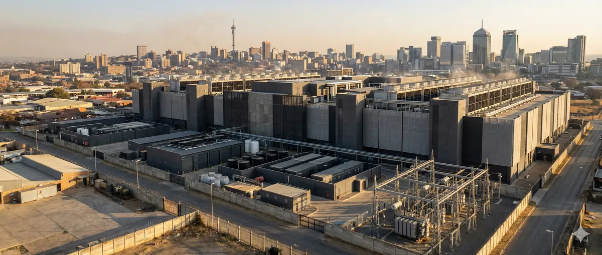
Sustainability & waterEngineering Journal
A data center engineer fact-checks Sam Altman's claim. Peer-reviewed research vs CEO talking points. 17 billion gallons and counting.
AI & HPC infrastructureFuture Forward
340K unfilled DC positions globally. Analysis of hiring, pay, and training constraints, with an interactive talent gap calculator across 12 markets.
AI & HPC infrastructureFuture Forward
Analysis of the web from 2020 to 2035: AI answers, search click compression, platform power, and how durable sites survive the split. Future Forward FF-1.

Reliability & safetyGlobal Analysis
Engineering-first analysis of simultaneous fiber damage in the Strait of Hormuz: cable routing, latency, repair delays and GCC industrial exposure.

Market, economics & policyGlobal Analysis
Batam is cheaper, Singapore is more certain. 2026 analysis: when to choose Singapore, when to choose Batam, and when to use both.

Market, economics & policyGlobal Analysis
Which economic sectors grow fastest by 2036? Ranked analysis of AI, energy, semiconductors with methodology scoring and data center demand impact.
AI & HPC infrastructureEngineering Journal
130kW rack density, liquid cooling, $600B+ hyperscaler CAPEX. Power, cooling, and network requirements for AI facilities. Readiness calculator.

Market, economics & policyGlobal Analysis
$37B SEA data center opportunity: Jevons Paradox, sovereign AI mandates, $602B hyperscaler capex. Interactive Opportunity Value Calculator.

Market, economics & policyGlobal Analysis
6,068 MW pipeline in Southeast Asia. Johor's 5.8 GW gamble, Indonesia at 1,717 MW. Interactive bubble risk calculator and market analysis.
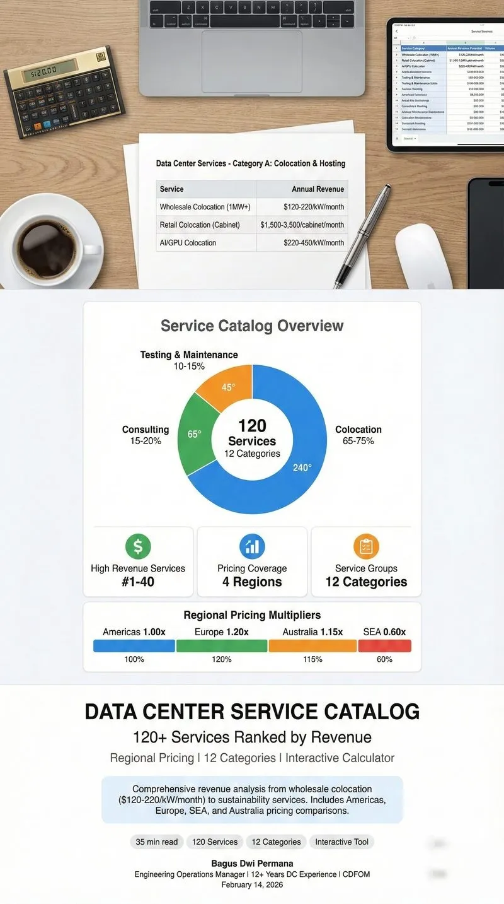
Operations & maintenanceEngineering Journal
135 data center services across 11 categories with regional pricing. Interactive revenue calculator for Americas, Europe, SEA, and Australia.

Market, economics & policyGlobal Analysis
$64B in data center projects contested globally. Multi-perspective community impact analysis with interactive scorecard calculator.
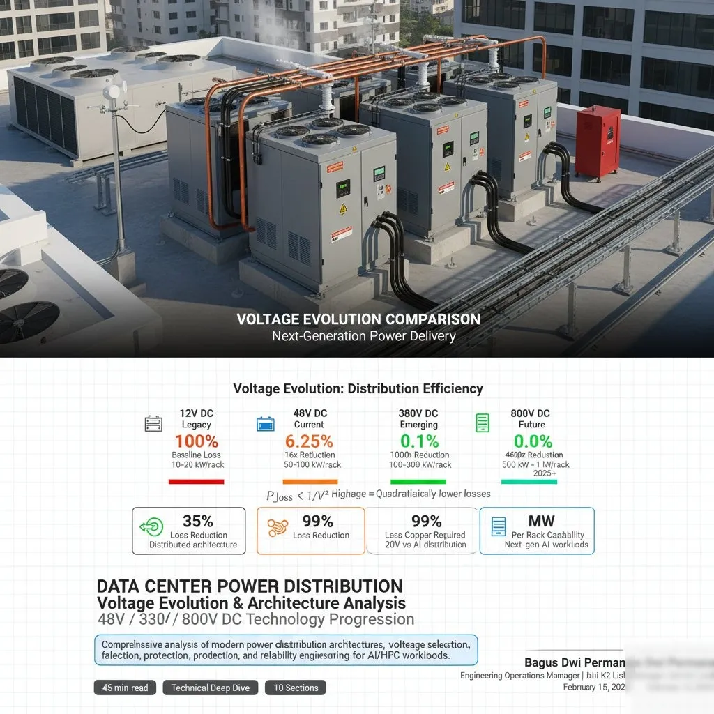
Power & gridEngineering Journal
Hyperscaler power distribution: AWS, Google, Microsoft, xAI architectures analyzed. 48V/380V/800V DC, failure scenarios, reliability engineering.
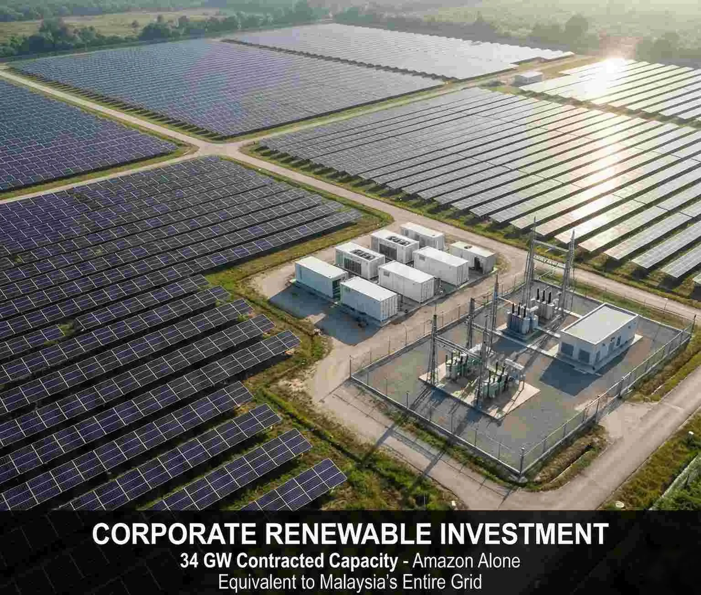
Power & gridEngineering Journal
How AI data centers fund grid modernization through $100B+ renewable investment and $33,500/MW surplus value. Interactive economic simulator.
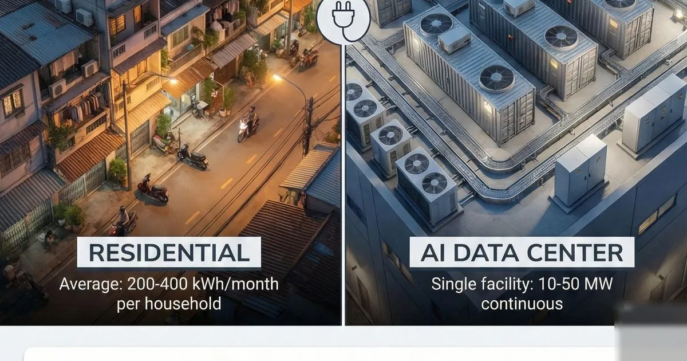
Power & gridEngineering Journal
One AI data center equals 100,000 households in power demand. Interactive impact calculator for Southeast Asian electricity bill analysis.
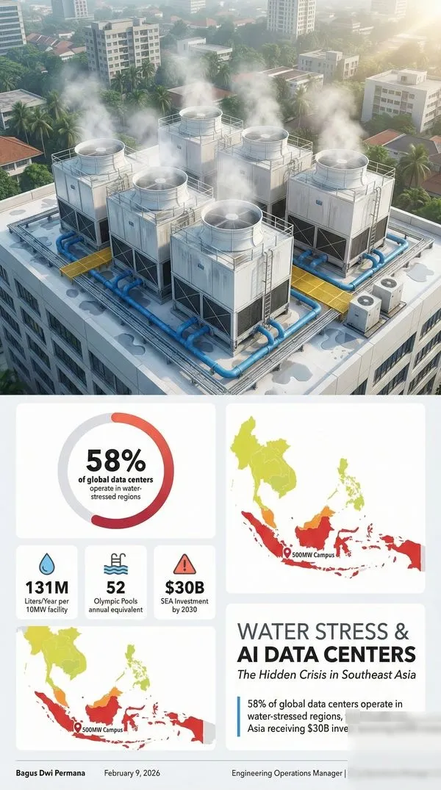
Sustainability & waterEngineering Journal
58% of data centers in water-stressed regions. Interactive water stress calculator, WUE benchmarks, and sustainable cooling strategies for SEA.

Reliability & safetyGlobal Analysis
Why 20+ nations urge 72-hour preparedness. NEW START expired, NATO concerns, infrastructure attacks. Interactive survival kit calculator included.
Cooling & thermalEngineering Journal
Nvidia Rubin's direct-to-chip cooling doesn't eliminate HVAC. Tropical climate analysis, hybrid cooling, and fault scenario implementation guide.
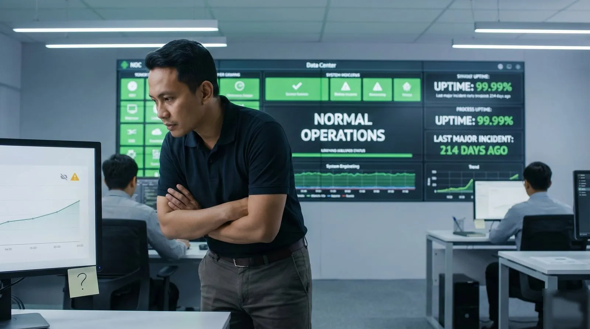
Reliability & safetyEngineering Journal
Safety as presence of positive capacity, not absence of incidents. Weak signal detection, HRO principles, and Safety-II in data centers.
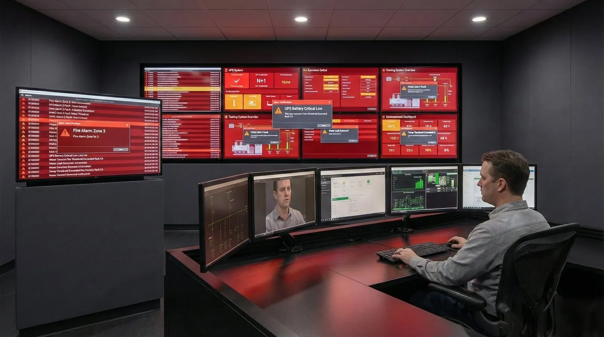
Operations & maintenanceEngineering Journal
Why alarm fatigue is a system design failure, not operator negligence. ISA-18.2 framework applied to data center BMS and DCIM alarm rationalization.
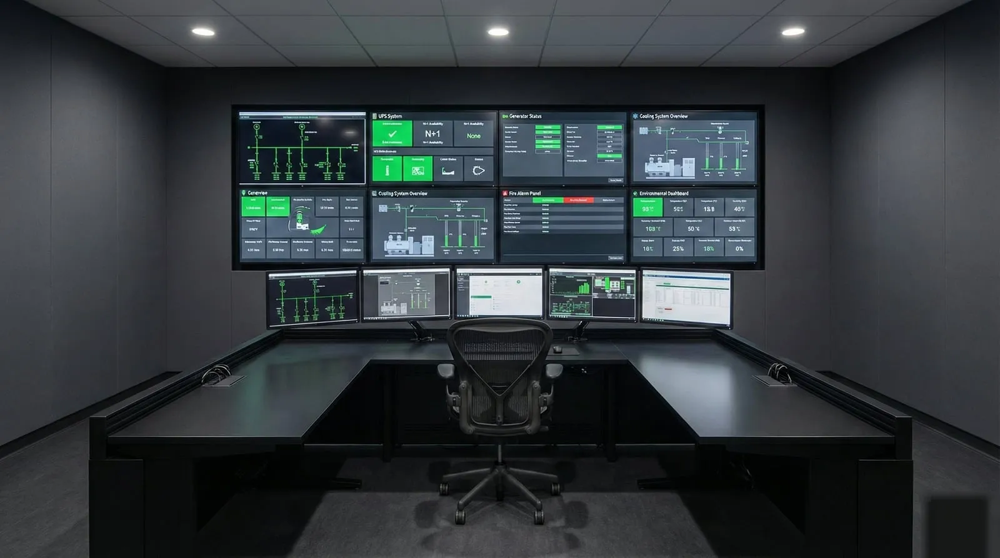
Reliability & safetyEngineering Journal
Document preventive work and assess data center operational maturity using Safety-II principles and an interactive calculator.
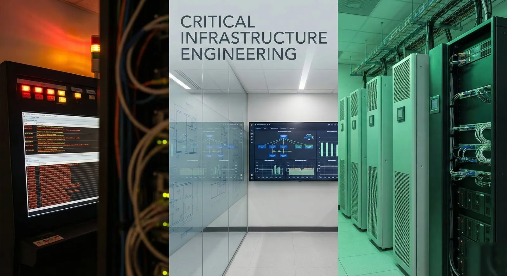
Operations & maintenanceEngineering Journal
Maintenance compliance as workflow engineering, not technician discipline. CMMS optimization, asset governance, and PM completion rate strategies.
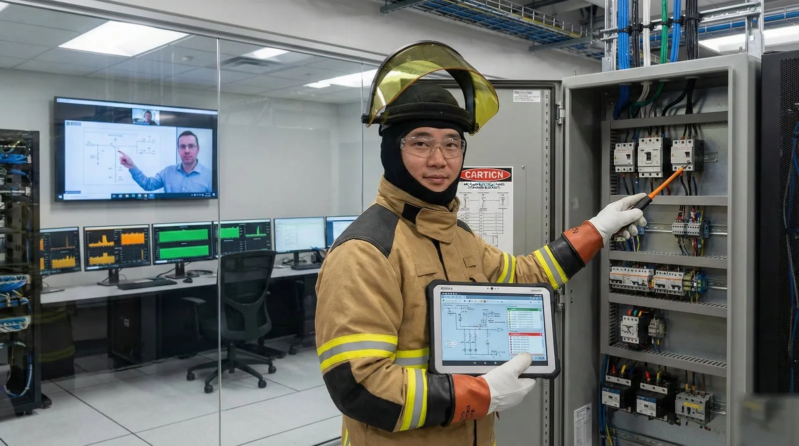
Operations & maintenanceEngineering Journal
Building in-house capability as a reliability strategy. Vendor dependency risks, decision latency analysis, and knowledge retention frameworks.
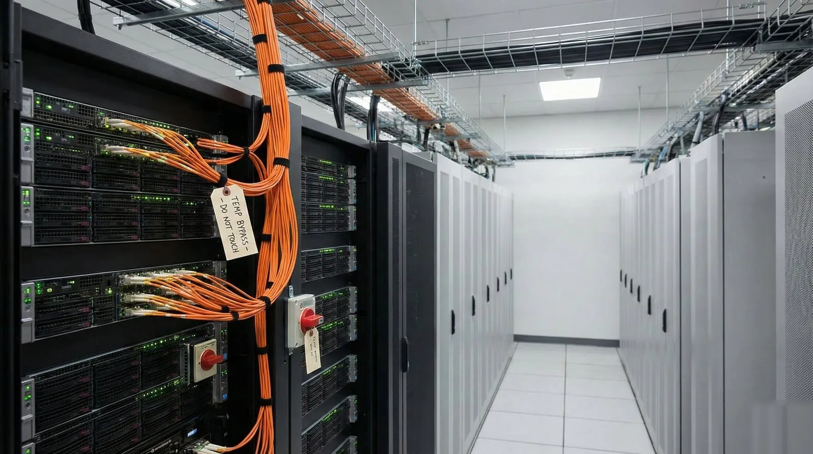
Reliability & safetyEngineering Journal
Technical debt in live data centers is operational risk. Hidden cost analysis, debt quantification methods, and remediation prioritization.
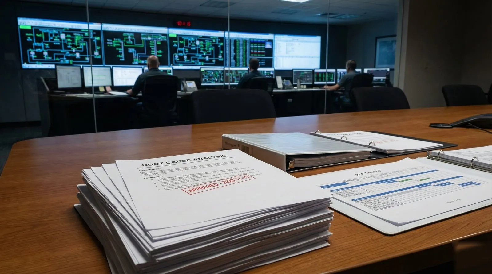
Reliability & safetyEngineering Journal
Why post-incident RCA fails without design authority. Organizational learning barriers and the gap between findings and system-level change.
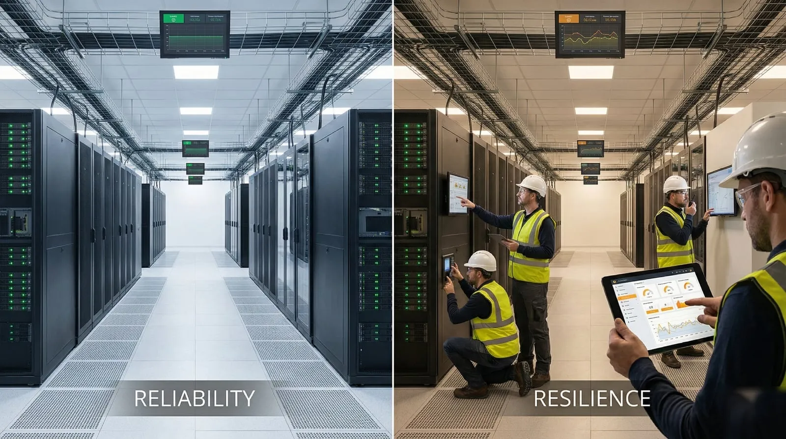
Reliability & safetyEngineering Journal
Moving beyond Uptime Institute tier ratings to operational resilience. Reliability vs resilience, adaptive capacity, and graceful degradation.
No article matches these filters.
Three rules every article follows.
When problems recur, look past the event to the system conditions that made it possible. Durable improvement comes from redesigning systems, not from blaming people.
Every claim is grounded in operational data, safety-science literature or a documented case. What is known is kept apart from what is assumed.
The articles come from live operations: real constraints, real decisions, real consequences. Theory informs practice; practice validates theory.
Four pillars that connect every article in this journal.
Cognitive load, attention and human-system interaction.
Workflows, governance and control structures.
Technical debt, latent conditions and drift.
Root-cause analysis, feedback loops and continuous improvement.